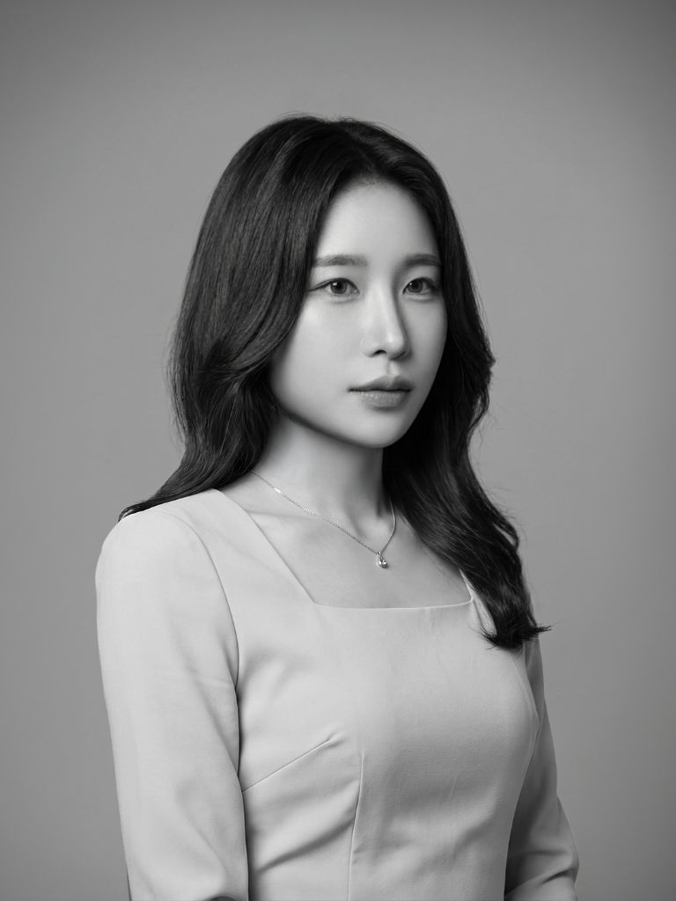
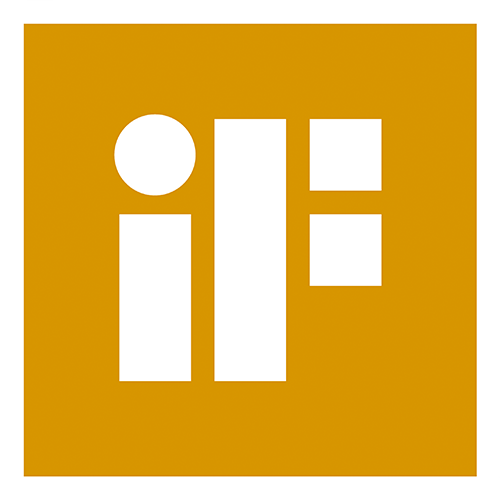
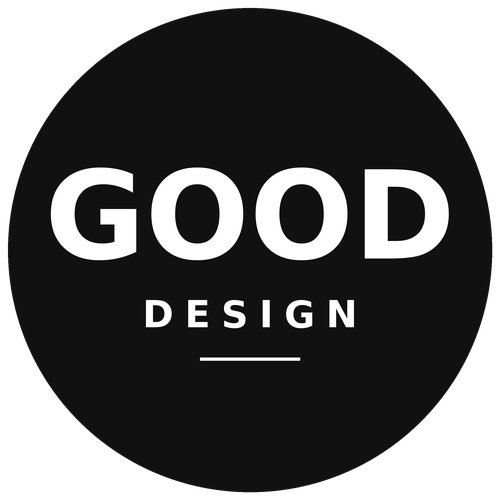
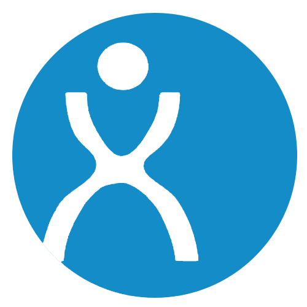
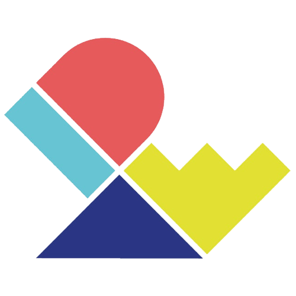
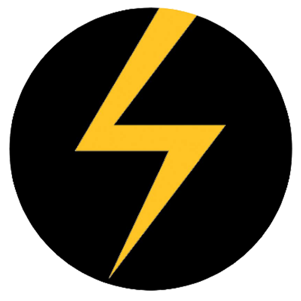

About.
컨셉부터 양산까지 책임지는 제품디자이너, 고수민입니다. 로봇청소기와 수전동휠체어를 스케치·3D·CMF·목업·사양서까지 직접 다룹니다.

Biography
에브리봇 디자인 R&D 센터에서 로봇청소기, 소형가전, 수전동휠체어를 디자인합니다. 스케치·3D 모델링부터 CMF, 목업, 양산 지원까지 출시 전 과정을 맡고, 팀의 UI·CMF·사양서 기준도 만들어 운영합니다.
홍익대학교 대학원 산업디자인전공에서 석사 학위를 마쳤습니다. 학부는 건국대학교 Glocal 산업디자인전공을 졸업했습니다.
석사 재학 중에는 홍익대학교 ‘HIDE Lab’(인간중심 통합디자인공학 연구실)에서 기업연구과제와 디자인혁신역량 R&D 정부연구과제를 수행했습니다. 엔지니어와 협업해 선행디자인·아이템 발굴부터 프로토타입 제작, 사용성 평가와 검증까지 디자인 프로세스 전 과정을 주도해 왔습니다.
쓰리스핀 슬림(TS450)으로 iF 디자인 어워드 2026 Gold, 레드닷 디자인 어워드, 굿디자인(GD) 선정을 받았고, 대학원에서는 HCI KOREA 2024 Creative Award 최우수상을 받았으며 IDEA와 Spark Design Awards에서 Finalist에 선정되었습니다.
모빌리티 · 로보틱스 · 컨슈머 일렉트로닉스 분야의 제품디자이너 포지션을 찾고 있습니다.
홍익대학교 대학원 · 산업디자인전공 석사
미술학석사 · 디자인학부 산업디자인
건국대학교 · Glocal 산업디자인전공 학사
Bachelor of Industrial Design, Glocal Campus
용인고등학교 졸업
에브리봇(주) · 디자인 R&D 센터 디자인팀 대리
Robotics · Consumer Product Design
홍익대학교 ‘HIDE Lab’ · 석사 연구원
인간중심 통합디자인공학 연구실 · 기업연구과제 및 정부 R&D 참여
에브리봇 · TS700 쓰리스핀 스팀
제품디자인 · 양산 지원
에브리봇모빌리티 · H500 수전동휠체어
컨트롤러 · 인휠모터 휠 디자인
에브리봇 · 맥스젠 · 에브리봇모빌리티
양산 제품 CMF · 부분 형상 디자인 16종
에브리봇 · TS450 쓰리스핀 슬림
물걸레 로봇청소기 제품디자인
현대자동차 X 마크로밀엠브레인
고객 관점 실차 UX 점검 조사 시나리오
서연이화
심리스 환경 제공을 위한 자동차 내장재 보유기술 기반 미래 모빌리티 내장디자인 연구
현대자동차 · Inclusive 기반 미래 모빌리티
UX 디자인 및 편의장치 개발
현대자동차 X 마크로밀엠브레인
실사용 정황 기반 기능별 UX 개선방안 조사 시나리오
글로우원 · 메타버스 플랫폼
디자인프로세스 최적화를 위한 실재감테크 기반 인간중심 스마트조명 디자인 개발
COWAY · NOBLE
프리미엄 차세대 정수기 UX 디자인
현대자동차 X 마크로밀엠브레인 · 대형 SeUV
공간 및 웰니스 컨셉 USP 항목에 대한 UX 디자인
현대자동차 X 마크로밀엠브레인 · 준대형 전기세단
UX 디자인 컨셉 솔루션 발굴
HCI KOREA 학술대회
Creative Award 작품 발표 · 전시
서울디자인페스티벌
코엑스 전시 · 홍익대학교 부스
로보월드 킨텍스 전시
홍익대학교 부스 운영 총괄 및 전시
한국스텐포드연구소
아이트래커 활용 사용성 평가 데이터 분석 워크숍
KIRO · 서울로봇아카데미
모바일 로봇 디자인 엔지니어 과정 수료 · WADE
홍익대학교 · 2022 디자인 해커톤
프로토타입 캠프
Toolkit.
ToolsRhino 3D · Keyshot
Photoshop · Illustrator
After Effects
VIZCOM · Claude Code (이 사이트 제작)
Awards.
-

iF Design Award 2026 — Gold
쓰리스핀 슬림 (TS450)
-
Red Dot Award: Product Design 2026
쓰리스핀 슬림 (TS450)
-

Good Design Korea 2026 — GD 선정
쓰리스핀 슬림 (TS450)
-

IDEA International Design Excellence Awards — Finalist
MobiLink
-

HCI KOREA 2024 · Creative Award, Excellence Award (최우수상)
WADE
-

Spark Design Award — Finalist
MobiLink
Publications.
Papers · KCI-
오프라인 사용자 경험 향상을 위한 대형마트 모바일 애플리케이션 서비스디자인 제안 — 위치기반 서비스를 중심으로
기초조형학연구 25권 1호 (통권 121호) · KCI 등재 · 고수민, 김은영
-
5단계 자율주행 모빌리티 실내 기능제어 위치 도출을 위한 사용자 경험 디자인 연구 — 아이트래킹 실험을 중심으로
기초조형학연구 24권 6호 (통권 120호) · KCI 등재 · 고수민 외 4인
Patents.
Patent · Design Registration-
특허 등록 — 워터 드로잉을 위한 로봇 장치 및 이를 포함하는 로봇 시스템
제10-2942532호 · 고수민 외 3인
-
디자인 등록 — 지능형 서비스 로봇
제30-1280754호 · 고수민 외 3인